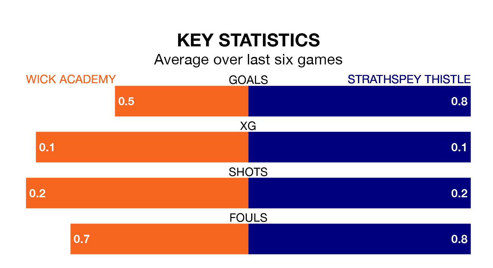

Saturday's match at Harmsworth Park sees two relegation candidates play each other, as 15th-ranked Wick Academy host bottom of the table Strathspey Thistle.
Wick Academy have picked up 13 points from their first 13 Highland Football League games, with three wins and four draws.
That is six points more than Strathspey Thistle have collected, having won two and drawn one.
Wick Academy are in terrible form in Highland Football League, with no wins and two draws from their last six games.
But with no wins and a draw over that period, Strathspey Thistle's form is even worse – they have taken one point from 18, compared to the hosts' two.
In the last 10 years, Wick Academy and Strathspey Thistle have played each other on 10 occasions. Wick Academy won nine of them and Strathspey Thistle one.
On average, Wick Academy scored 3.5 goals and Strathspey Thistle 0.6 in those matches.
Their last meeting was on March 22, when Strathspey Thistle won 2-1 away.
With 18 goals in 18 games so far this season, Wick Academy are the league's lowest scorers with 1.0 goals per game. And they are conceding more than average, letting in 47 goals at a rate of 2.6 per game.
The away side are also below average scorers, with 1.1 goals per game, compared to a league average of 1.9. They have conceded 3.7 goals per game.
Wick Academy's last match was on January 27, a 3-0 loss against Fraserburgh.
Strathspey Thistle drew 2-2 with Rothes last time out, on Wednesday.
Updated: 15:45 (UTC), 02/02/24